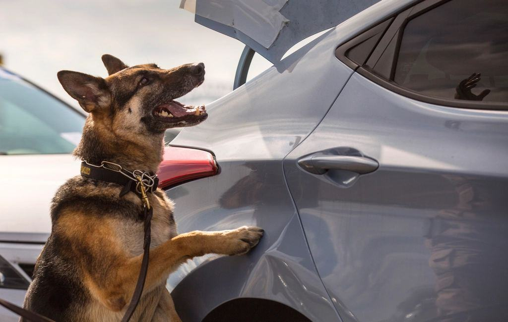

Före & efter
Några hundar och de steg de har tagit hos oss.
- 2026

Ronja
Sju besök på golvet innan första kloklippet – nu kommer hon in med svansen uppe.
- 2026

Charlie
Bitit två frisörer – klipptes på tre besök à 30 minuter utan munkorg.
- 2025

Pippi
En klo per besök i början, nu alla tjugo på fem minuter.
- 2025

Viggo
Lärde sig hakan-på-kudden och står nu still under hela klippningen.
- 2025

Nala
Klor och bad hemma i Timrå, i hennes egen hall.
- 2026

Totte
Fyra korta besök innan första riktiga klippningen.


Omdömen
Från ägare som nästan gett upp
Malin E. · Sundsvall”Charlie hade bitit två frisörer och vi var nära att ge upp. Therese tog tre besök och ingen munkorg. Vi grät i bilen på vägen hem.”
Daniel B. · Njurunda”Ronja fick äta godis på golvet i sju besök. Ingen annan hade det tålamodet.”
Annelie H. · Timrå”Lovisa kom hem till oss eftersom Nala inte klarar bilen. Hon satt på hallgolvet i en timme.”